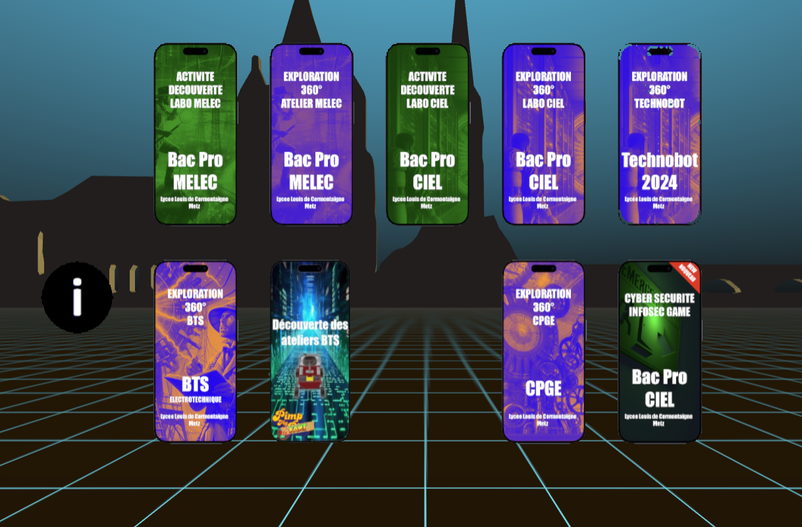

Les projets des élèves
Découvrez quelques projets réalisés par des élèves du Bac Pro CIEL.

Visite virtuelle du lycée
Année : 2025 — Réalisé par : Chef des Travaux
Réalisation d’une visite virtuelle immersive du lycée avec modélisation 3D des salles et espaces communs. Les utilisateurs peuvent naviguer librement et découvrir toutes les installations et les différents espaces du lycée.
Explorer en VRCréation d'une infrastructure réseau
Année : 2025 — Réalisé par : Terminale CIEL
Configuration d’une infrastructure complete pour gérer les ordinateurs fixes et portables de la salle 312. Ce projet permet la centralisation des utilisateurs, la gestion des droits et le déploiement des ressources sur tous les postes.
Voir le projet